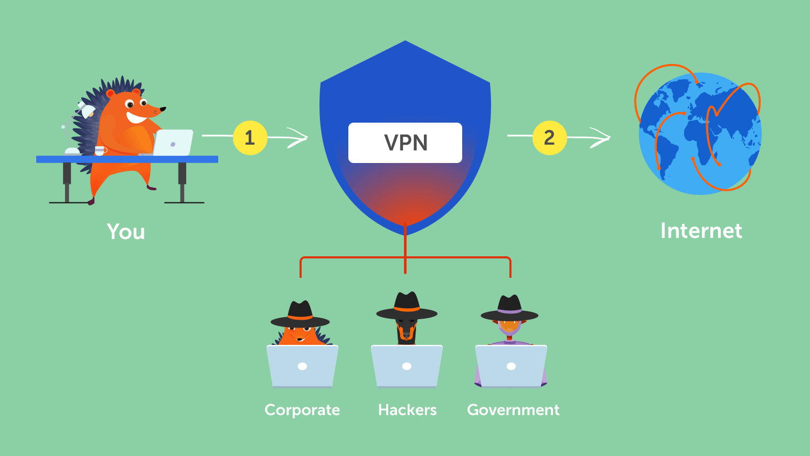
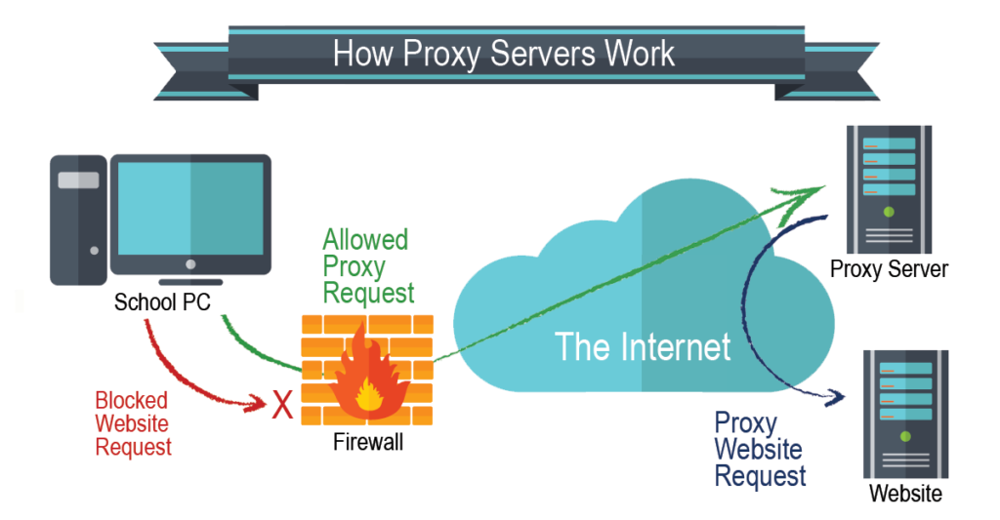

What is VPN ?
==>A virtual private network, better known as a VPN, gives you online privacy and anonymity by creating a private network from a public internet connection. VPNs mask your internet protocol (IP) address so your online actions are virtually untraceable. Most important, VPN services establish secure and encrypted connections to provide greater privacy than even a secured Wi-Fi hotspot
==>A virtual private network is a key privacy tool that you should use when you’re logging onto the internet from a public place such as a coffee shop, hotel lobby, or any other spot that offers access to free public Wi-Fi.
==>A VPN creates a type of tunnel that hides your online activity, including the links you click or the files you download, so that cybercriminals, businesses, government agencies, or other snoops can't see it.

What is proxy ?
==>A proxy server is a system or router that provides a gateway between users and the internet. Therefore, it helps prevent cyber attackers from entering a private network. It is a server, referred to as an “intermediary” because it goes between end-users and the web pages they visit online.When a computer connects to the internet, it uses an IP address. This is similar to your home’s street address, telling incoming data where to go and marking outgoing data with a return address for other devices to authenticate. A proxy server is essentially a computer on the internet that has an IP address of its own.
Proxy Servers and Network Security :
==>Proxies provide a valuable layer of security for your computer. They can be set up as web filters or firewalls, protecting your computer from internet threats like malware.
==>This extra security is also valuable when coupled with a secure web gateway or other email security products. This way, you can filter traffic according to its level of safety or how much traffic your network—or individual computers—can handle.
